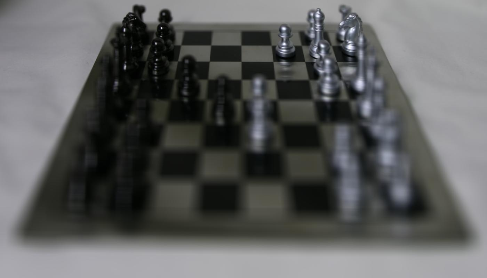
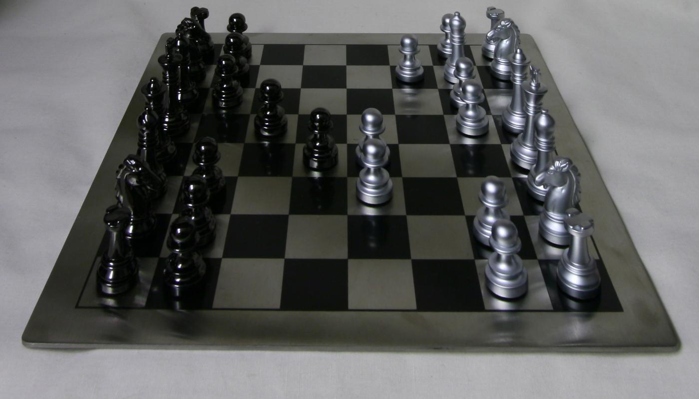

Lightfield Camera
Depth Refocusing
The input datasets each consist of a single image photographed
at each point of a 17 x 17 grid (for a total of 289 images). Due to the parallax effect, objects further away move less between the different camera angles. As a result,
taking the average of all the images creates a blurry foreground and a clearer background, simulating a far-away focus depth.
Alternatively, we can simulate different focal depths by shifting each image by some factor multiplied by the grid coordinates. I denote these factors as
Cy and Cx for the vertical and horizontal directions, respectively. If the camera coordinates for a given
image is (x, y), then we shift the image by (Cx * x, Cy * y) before adding it to the running average.
Note: The dataset uses a coordinate system with (0, 0) as the lower-right camera position. In order to reduce the off-centeredness of the averaged images,
I redefine the origin to be the point (8, 8), so the x and y offsets now range from -8 to 8.

Cy = 0, Cx = 0
Focus Distance
Farthest
Closest
Cy = 0, Cx = 0
Focus Distance
Farthest
Closest
Note: The lego knights seem to have a bit more complicated geometry than the chessboard, so the transition between focal distances is less smooth.
For example, focusing on the close arm of the lego figure leaves the other arm blurry.
Aperture Adjustment
For this problem, we simulate multiple different camera apertures by changing the number of images combined into the average image. For example, the average of
many images mimics a large aperture, and the average of only a few images mimics a small aperture.
Using the previous part, we first shift the images so that they all focus on the center of the chessboard (using Cy = -1, Cx = 1).
Then, we take the average of only images taken within a specific radius from the center of the camera coordinate grid.
Increasing this radius increases the number of images averaged, simulating a larger aperture.

R = 0 (1 image)
Simulated Aperature
Smallest
Largest
GIF Gallery

Depth Refocusing - Chessboard

Depth Refocusing - Lego Knights

Aperture Adjustment - Chessboard